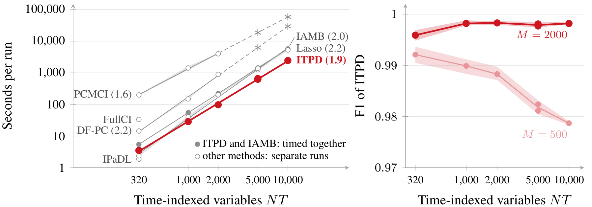

Soundness and completeness theorems for the ITPD causal discovery algorithm are formalized in Lean 4 core (no Mathlib) via AI-assisted autoformalization, with code released.
Abstract
Learning and inference on time series can pose significant statistical challenges, including autocorrelated observations, distribution shift over time, and the curse of dimensionality. These challenges complicate the practical application of causal discovery algorithms, which already suffer from high computational and sample complexity in the general case. To mitigate these issues, this work introduces Iterative Temporal Parent Discovery (ITPD): a sound and complete constraint-based procedure for causal structure learning on multivariate time series with causal nonstationarity. ITPD takes a local-to-global learning approach that discovers the global graph by sequentially discovering the parent set for each variable. ITPD exploits temporal structural priors, graph partitioning, and the local Markov condition to swap higher-order conditional independence tests for lower-order alternatives. With an exact oracle, ITPD performed the least number of tests and used the smallest average conditioning set sizes relative to baselines. In benchmarking simulations, ITPD sat on the Pareto frontier with respect to F1 and wall-clock time and was faster than baselines on large graphs ($\geq$ 1000 nodes). For graphs with 2000 nodes, ITPD ran $2.3\times$, $9.1\times$, and $40.9\times$ faster than iterative IAMB, DF-PC, and PCMCI, respectively.
Problem
Constraint-based causal discovery on multivariate time series is hampered by autocorrelation, causal nonstationarity, and the high computational and sample cost of conditional independence (CI) tests on large graphs.
Approach
The authors propose Iterative Temporal Parent Discovery (ITPD), a local-to-global procedure that learns the parent set of each variable in turn. It uses temporal structural priors, graph partitioning, and the local Markov condition to replace higher-order CI tests with lower-order ones, and it does not assume a recurring window graph. Selected soundness and completeness results were autoformalized with AI assistance in Lean 4.33.1, using only the core library. The five main theorems depend only on the standard axioms.
Results
With an exact oracle, ITPD ran the fewest CI tests and used the smallest average conditioning sets of the methods compared. In simulations it lay on the Pareto frontier of F1 versus wall-clock time. On 2000-node graphs it ran 2.3×, 9.1×, and 40.9× faster than iterative IAMB, DF-PC, and PCMCI, respectively.

Figure 4: Seconds per run (left) and F1 of ITPD (right) versus total time-indexed variables, using Fisher-z CI tests at M=2000 and d=2 . Left: For each method, numbers in parentheses give the fitted exponent for the power by which wall-clock time scaled with total variables. Open marks are methods timed in separate runs on shared nodes. Each point is a mean over 10 graphs, and the shaded bands are
N
ITPD d=2 (s)
IAMB d=2 (s)
ITPD d=5 (s)
IAMB d=5 (s)
20
3.4–3.6
5.5
3.8–4.0
11–12
50
27–29
56–57
31–33
111–119
100
96–99
230–231
109–115
450–490
ITPD vs IAMB wall-clock time (seconds) by graph size N